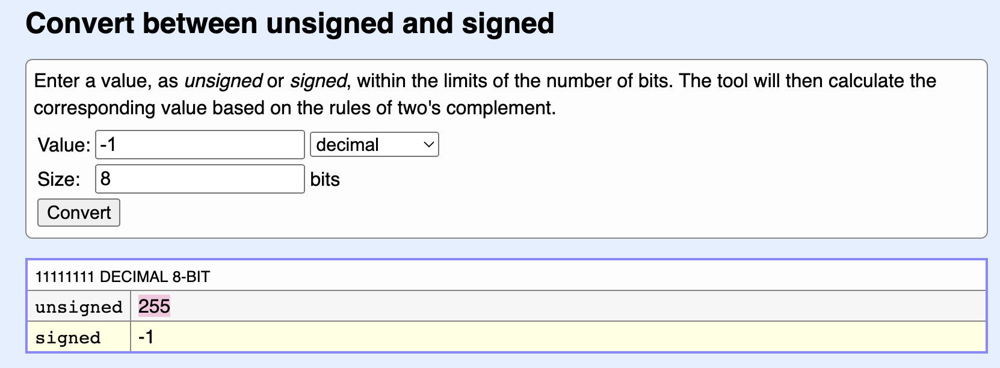

In this article I will collect common binary vulnerability (expept for the bufferoverflow which has its own dedicated article) … .
Type Safety
There are programming languages which are type safe and which are not. Ruby and Python are type-safe because there is only 1 type - dynamic. All operations are permitted, but no all are implemented. In case of analogous code, there still will be an error, but that does not lead to a vulnerability.
What does that mean really? Consider the code snippet below:
int(*cmp)(char*,char*);
int *p=(int*)malloc(sizeof(int)); //allocate memory on heap and assign p to the this address
*p=1; // overwrite the address with number 1, i.e. invalid address
cmp = (int(*)(char*, char*))p; //cast pointer to function pointer and assign to cmp variable
cmp = ("hello", "bye"); // error, since p doesn't point to a valid address
What languages are not type-safe, you might ask? Well, guess. A little hint: almost all serious binary vulnerabilities are C++/C concern and any other language that manipulates memory manually, for that matter.
Integer Overflow
On its own its rather benign and useless, so, it’s usually comes with something more naughty (over/undersize a buffer, index beyond bounds).
Consider the snippet below:
int copy (char* buffer_arg, int len) {
char buff_var[800];
if (len > sizeof(buff_var)) ret -1;
memcpy(buff_var, buffer_arg, len);
return;
}
Variable int is unsigned integer, which means that it can’t be -1. However, if you try assigning -1 to it, it will be turned into 255 (2s compliment). It’s a different topic, how exactly numbers get their lovely little minus, out of scope of this article, but in scope of another (see).
When a computer sees a signed integer compared to an unsigned, it will interpret int as uint instead and thus will turn it into a positive number. Believe me, it will find a way to look at it in a positive light (computers all but pessimists 😂). So, -1 will magically turn into 255 like a pumpkin 🎃 into a carriage 🚔.

You can try yourself here.
Say, some program flow led to int len=-1 somehow. And let’s say that sizeof(buff_var) equals 800. What will a computer see when executing len > sizeof(buff_var)? Since sizeof() returns uint, it will see roughly the following: ❗️uint len > uint sizeof(buff_var), or 255 > 800. Since 255 is not greater that 800, the code following the if statement will get executed.
Let’s ee enother example. Let’s say there is a woman with a 👜 bag wants to put a lot of purely lady stuff inside: 🗝, 💷, 💄, 🩹, 📙, 🖌, 🪓, so, 7 items.
ushort items_to_stash;
int bag_size;
char 👜[7];
// a simple check that we have the required amount of arguments (irrelevant for this discussion)
if (argc < 3) return -1;
bag_size = atoi(arg[1]);
items_to_stash = bag_size;
// this bag is limited to 7 items, it can't have more. Can it?
if (items_to_stash > 7) { // items_to_stash is ushort, i.e. it's unsigned and can be less than 0. However, bag_size (which was the original value, is int). So, we use it as an unsigned when comparing and then we will use the int (signed) version of it when performing the actual copy process.
printf("Hey! This bag is not the one Hermione had!");
return -1;
}
printf("That's the way, well done. Put the axe back :) Ladies don't carry them at leisure.");
memcpy(👜,[🗝,💷,💄,🩹,📙,🖌,🪓],bag_size); // here is the copying itself
return 0;
With atoi(arg[1]) we get the second argument passed to our program (which would be the bag’s 👜 capacity). This value is saved to int bag_size variable that can get less than 0. Then, for some unknown and reason that eludes me totally, this gets copied into a ushort (unsigned) items_to_stash variable which is then used to perform comparisson. Since 7 is considered to be signed, ushort items_to_stash temporarily transforms into short items_to_stash (invisible to us, but still).
The same problem outlined above would happen here should bag_size get below 0 🥶 for some reason ❄️.